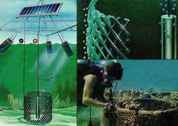
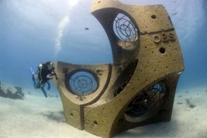

Like many of the other positive stories ignored by mainstream media, the combined focus of artists, biologists and business (tourism in this case) can come up with some effective responses. We should all take heart, because rather than leaving the case of the corals to advocacy and pressure groups, others have begun to (literally) jump in and get to work with reconstruction and restoration. Not surprisingly, these include gardeners.
The Corals for Conservation program was first initiated in 1999 in Fiji, as ”The Coral Gardens Initiative”. The program focuses at restoring degraded coral reef ecosystems by working in partnership with marine resource owners to develop community-based marine management plans and to implement strategies to rectify problems such as over-fishing and coral reef decline.The program started in Fiji under the name “The Coral Gardens-Living Reefs Initiative”. In 2008 work was ongoing in five district level sites. The work has been extended to Samoa and the Caribbean using donor funding. New countries and sites within a country can be added, as long as there is strong local support and donor funds can be found.
See what I mean? Twelve years in operation and largely ignored by the media. And this is NEWS!
It gets better....
Like the work of Rachel Armstrong with metabolic materials and limestone formation (but much earlier), the process of Electrodeposition of Minerals in Sea Water known as Mineral Accretion Technology was developed by Architect, Marine Scientist, Prof. Wolf H. Hilbertz. Through extensive experimental applications, demonstration projects commenced in 1974, covering artificial reefs, coastal defense structures, shoreline stabilization - erosion control, mariculture, and marine construction.Although initially developed for structural applications, exceptional accumulations and growth rates of marine organisms on accreting structures were observed. The process was further developed as Biorock, where electric currents running through purpose-built steel frameworks speed up the rate of recolonization several fold.
Prof. Hibertz and Biorock have made impressive and in my opinion, phenomenally encouraging work in Bali, where the combination of local fisheries and tourism have started to recover from what seemed an inevitable collapse as the reefs were dying a relatively short while ago. His project is by no means secure, nor are the reefs and the communities which depend upon their health, but he has developed and demonstrated a vital and straightforward technology for restoration of some of Earth's most important habitats. Biorock deserves far more attention and support, and it needs to go mainstream now.
Still other, and obvious/inspiring coral recovery linked to tourism is a joint Jordanian - Israeli venture (already notable just at that) to establish new artificial reef bases in the Gulf of Aqaba, which lies at the northern end of the Red Sea and is bordered by both Israel and Jordan as well as Egypt and Saudia Arabia farther south. A 1994 peace deal between Israel and Jordan mandated that the two countries work together on combating marine pollution, natural resources issues, and coastal reef protection in the gulf.

Photograph courtesy Eran Brokovich, National Geographic News
These reefs draw tourists from around the world to the neighboring resort cities of Elat, Israel, and Al 'Aqabah, Jordan. And as elsewhere, more tourism and less reef creates a perfect formula for "suffocation via love". The artificial reefs are part of a response which will provide divers more places to visit, and eventually will support new coral growth and and extension of the natural reef system. (See more : National Geographic News, September 25, 2007)
I have saved the best for last. In a lyric fusion of art and conservation, more than 400 permanent sculptures have been installed in recent months in the National Marine Park of Cancún, Isla Mujeres, and Punta Nizuc as part of a major artwork called "The Silent Evolution." The installation is the first endeavor of a new underwater museum called MUSA, or Museo Subacuático de Arte.
The statues are made from a special marine-grade concrete which is not only stable in salt water, but which provides a chemically friendly foothold for colonization by algae, molluscs and corals. Created by sculptor Jason deCaires Taylor, the Caribbean installation is intended to eventually cover more than 4,520 square feet (420 square meters), which would make it "one of the largest and most ambitious underwater attractions in the world," achieve some relief from the approximately 750,000 tourists who visit local reefs each year. "Part of this project is to actually discharge those people away from the natural reefs and bring them to an area of artificial reefs."